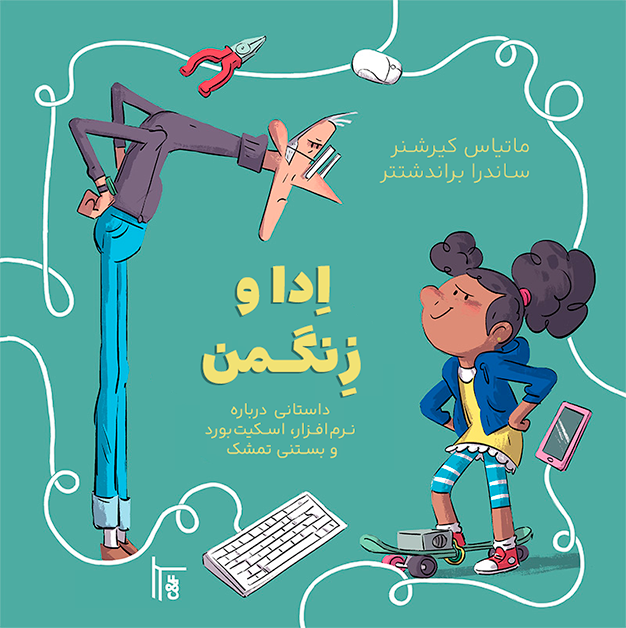

ماتیاس کیرشنر
ساندرا براندشتتر
اِدا و زِنگمَن
داستانی دربارهٔ نرمافزار، اسکیتبورد و بستنی تمشک

در پسزمینهای عمدتاً فیروزهای تیره، در قابی از خطوط سفید که ماوس، صفحهکلید و تلفن هوشمند صورتی را به هم وصل میکنند، اِدا و زِنگمَن روبهروی هم ایستادهاند. اِدا لبخند میزند و زِنگمَن اخم کرده است. اِدا موهای تیرهاش را با دو حلقه بسته، هودی آبی و اسکیتبورد دارد. زِنگمَن عینک و یقهٔ اسکی بنفش پوشیده است. (پایان توصیف)
داستان اِدا و زِنگمَن را بخوانید!
زِنگمَن مخترعی جهانی و فوقالعاده ثروتمند است. کودکان و بزرگسالان اختراعهای افسانهای او را دوست دارند. اما ناگهان مشکل بزرگی پیش میآید: اسکیتبوردهای الکترونیکی بچهها درست کار نمیکنند و همهٔ بستنیها یک طعم دارند. چه اتفاقی در حال رخ دادن است؟
اِدا، دختری جوان و کنجکاو، کشف میکند که زِنگمَن چگونه از راه رایانهٔ طلاییاش محصولاتش را کنترل میکند. او با دوستانش روی ابزارهایی کار میکند که دیگر زیر فرمان زِنگمَن نیستند.
کتابی برای کودکان و نوجوانان که لذت ساختن و خلاقیت را میآموزد. دربارهٔ نرمافزار آزاد، رفاقت و نقش دختران در فناوری برای رسیدن به خودمختاری. داستانی پرشور و فوقالعاده مصور.